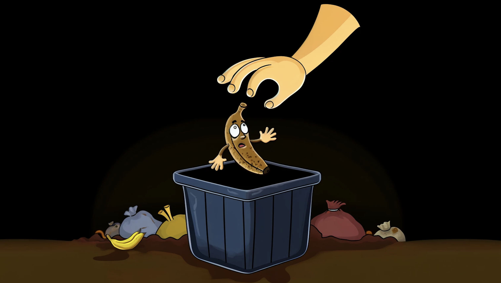
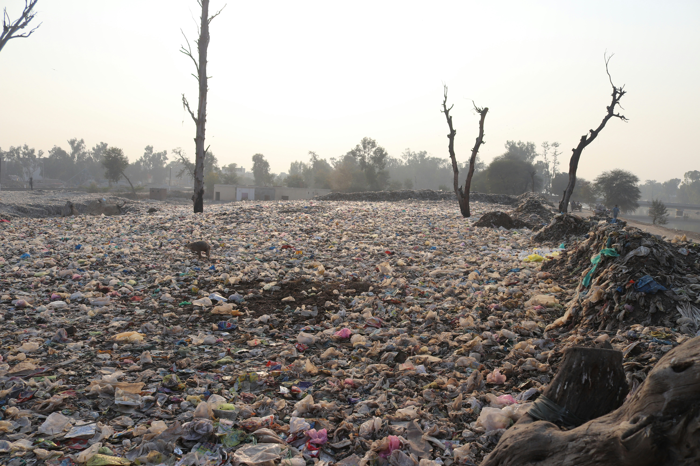
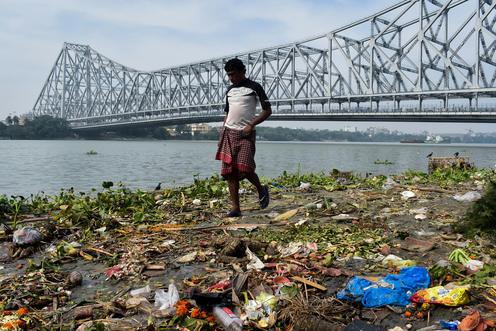
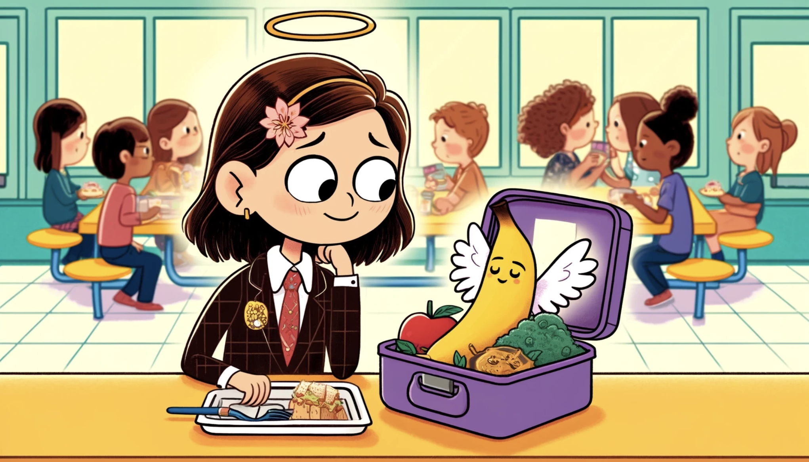
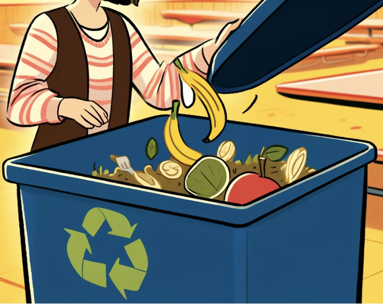

Lily's Lunchbox
This is Lily. She loves packing her lunchbox with all her favourite foods. But sometimes, she doesn’t finish everything.

Benny's Worry
Benny the banana watches as his friends get picked. Today, Lily was too full to eat him. Left alone, Benny feels sad and worries he might not get eaten as he starts turning brown and soft.

Forgotten Benny
Lily forgets her banana in her lunchbox. Benny, once bright and cheerful, feels his chances of being eaten slipping away as he grows browner and softer.

The Trash Bin
Finally, a hand reaches for Benny, but instead of heading to a table, he’s tossed into a dark, cold trash bin. Among other forgotten foods, Benny feels scared.

The Landfill
Benny and his new friends are taken to a landfill—a big, noisy, smelly place. They wish they were back in the kitchen or a cozy lunch box.

The Methane Problem
As Benny begins to rot, he notices a stinky smell. 'Yuck! I don't feel well,' Benny says. He remembers someone telling him that this smell is called methane. 'Methane,' he thinks, 'is a type of gas that can make our Earth too warm.' Benny feels sad because he wants to be helpful, not harmful. He dreams of being part of something wonderful instead, like a yummy snack or helping flowers grow in a beautiful garden.

The Environmental Impact
Benny sees the methane making the air dirty. Animals near the landfill, like birds and sea animals, notice the change and suffer from the polluted air.


The Earth's Cry for Help
The Earth feels the weight of food waste. Plants wilt, animals struggle, and people yearn for cleaner air and water.

Benny’s Dream
Benny dreams of what could have been—a smoothie, banana bread, or a special treat. He wishes for a second chance.

A Lesson in Composting
Benny learns about composting, a special way to recycle old food. Instead of throwing food like banana peels into the trash, you can put them in a compost bin. Over time, these food scraps turn into super soil that helps plants grow big and strong. Benny imagines becoming part of a beautiful garden, turning into healthy soil that feeds flowers and vegetables. He feels happy knowing he can help the Earth by being part of a garden, helping plants grow without hurting the planet.

Years Later
Years later, Lily notices more changes around her. Summers feel hotter, and winters seem colder. The gardens aren’t as bright with flowers, and there are fewer animals playing outside. People talk about not having enough water, and farmers are sad because their plants don’t grow well. Lily remembers Benny and feels sorry, thinking about how every little bit of food we waste can make these problems bigger.

Realisation and Resolution
Seeing the world change, Lily feels a deep sadness and responsibility. She remembers Benny and the day she threw him away, realizing her small choices had big effects. Lily promises herself to never waste food again. She knows each piece of food saved can help the planet a little more. From now on, Lily thinks of Benny every time she packs her lunch, making sure to eat all her food or find it a new purpose.


Call to Action
What you have just read is an every day occurance on the global issue of food waste. Every time you eat all your food or help it find a new purpose, you make Benny and his friends happy. You also help our planet to be a cleaner, healthier place. What will you do to help?
Click to learn to compost!